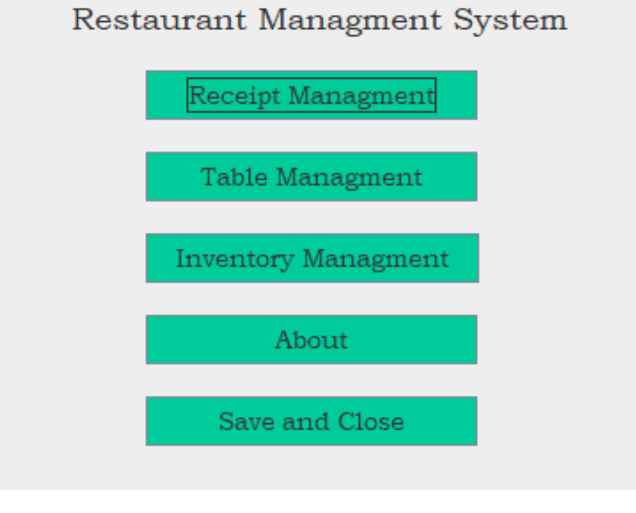
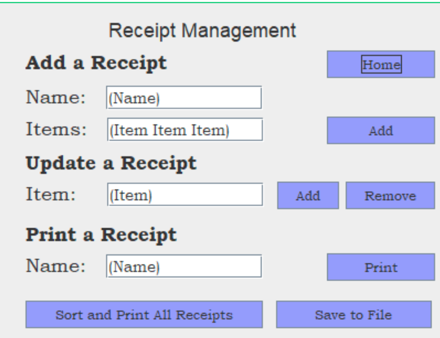
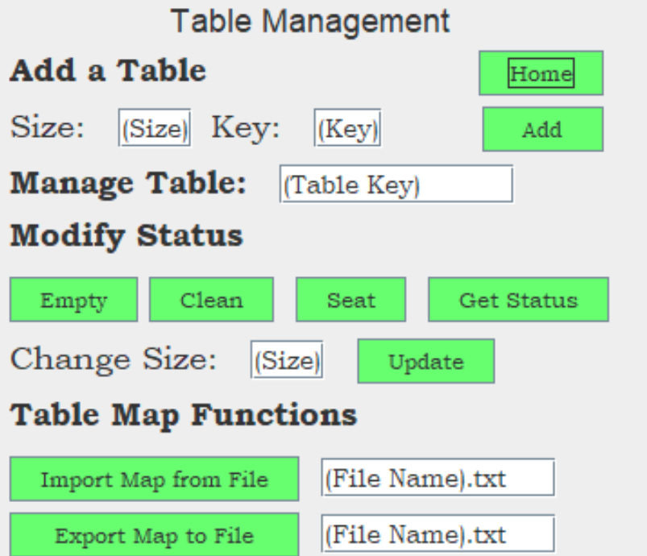
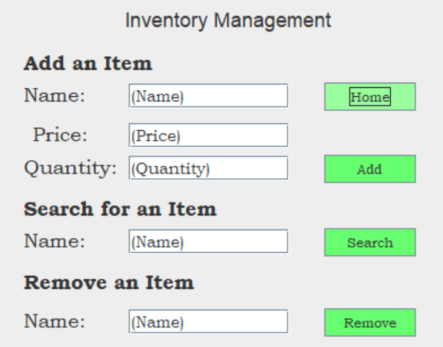

Michael McGaffick
Computer Science Graduate, Aspiring Software Developer
Restuarant Management System
About
This Java application was designed for the final project of an Algorithm Analysis course I took and was developed over around 8 weeks. This application was designed for the user audience of a small restaurant. The application would be used to manage inventory, receipts, and tables with their respective statuses. The program allows for saving and laoding from files to keep track of information or to transfer information to a new instance, though it was planned as though only one instance would be running per restaurant. The project itself was done in a similar environment to test driven development where I designed the test cases in word for needed functionality. They would initial fail, but were programmed in until they passed and then the code was refactored. The project required several different data structures, search algorithms, and sort algorithms. The project was entirely coded in Java with the user interfaces being designed in NetBeans and bash being used to run the Jar file. It was presented during a class demo at the end of the semester.
In-Depth Design
The first two parts of the user documentation (viewable on github) are the requirements and assumptions. I designed this program for a single instance in a restaurant that could be used to manage it and some of the limitations were the specific uses of it.
The project was designed using two main data structures. The first of these was Hash Maps, which were used to store the Table objects with a unique key for each one. I used a separate list that code store the keys or table nicknames, so that the user would not need to memorize it. Array Lists were also used for receipts list and inventory lists.
The project was designed around ten major test cases, which focuses on the functionality of the individual pages and the error handling. A user manual as well as extensive documentation were designed to accompany the project. The user interface was entirely designed in Net Beans with the functionality added in the Java code and the console was also used to display messages/information.
Specific Page Functionality
- The Home page lists the four different pages you can go to and the exit page. A command prompt window will open as well that provides information to user based on the buttons pushed and data entered. Upon starting up, files for the inventory will attempt to be loaded. Errors will be displayed in the console window, but the program will handle them and not crash.
- The Receipt page allows the user to manage the current receipts from when the program started up. The user can add a name along with items (that must be present in the inventory). The price will then be calculated and displayed in command prompt's output. You can add or remove items to a receipt as long as you have a person's name. You can then print the receipt to the output using their name. At the bottom of the page, you can all receipts from this running instance to a file named based on the system time. You can also sort all receipts alphabetically and print them to the console.
- The Table page allowed the user to add a new table by giving it a nickname and size (chair number). The user could then modify any table (by entering the nickname) and selecting an option below it. This included emptying it (customer's leave), cleaning it, or seating customers. Errors would occur if you tried to clean a clean table, clean it when customers were there, empty an empty table, etc. You could get the current status of the table as well or change the size (number of chairs) at a table. At the bottom of this page, you could save the table map to a file or you could load in an existing one.
- The Inventory page allows the user to add an item with a price and quantity to the system. You can then search for an item's information based on its name or remove it by also using its name. When loading the program, the inventory is automatically loaded in from its file and upon clicking save and exit, the inventory is saved to the file.
- The About page does not have anything on it except for general information like my name, the class it wasdeveloped for, and the date.
Other features about this project include that the output console displays which search or sort algorithm was used when they occurred. They were also timed and the result displayed as well. A user manual was designed with a sample walkthrough in documentation as well while most error handling was described in the console when it occurred.
Gallery



